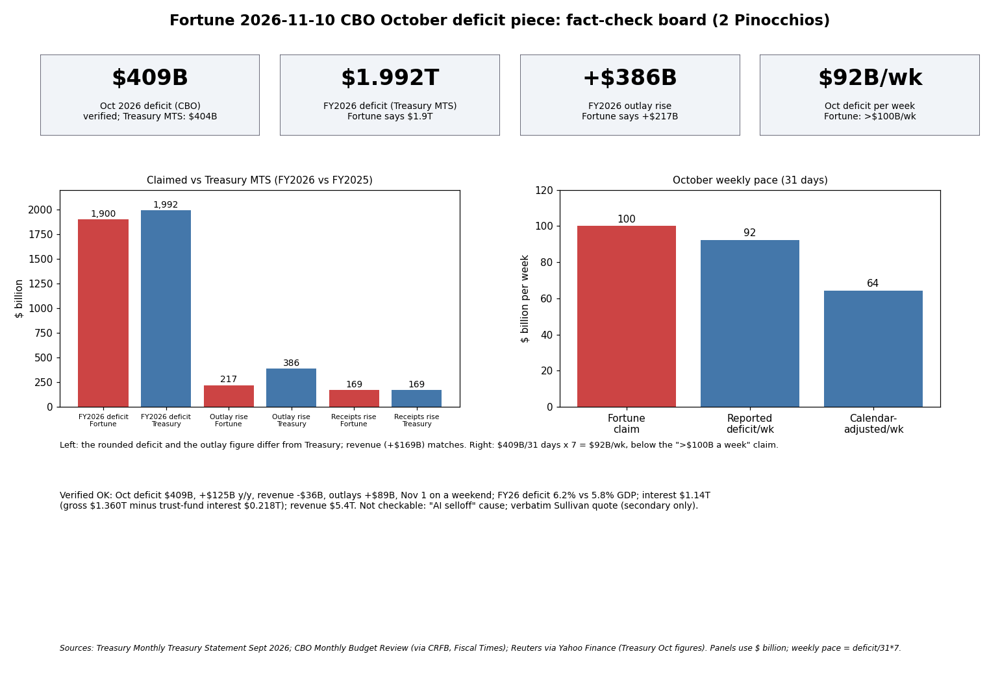

The core claim is accurate: CBO estimated the October 2026 deficit at $409 billion, $125 billion above October 2025, with revenues down $36B and outlays up $89B. Three secondary claims are wrong or loose, so the piece earns 2 Pinocchios.
| Claim | Finding | Confidence |
|---|---|---|
| Oct deficit $409B, +$125B | Verified (CBO via CRFB). Treasury MTS: $404B | High |
| Revenue -$36B, outlays +$89B | Verified (Treasury: -$35B, +$84B) | High |
| Payments shifted into Oct, Nov 1 weekend | Verified | High |
| >$100B/week borrowing | Deficit pace $92B/week; borrowing unverified. Misleading | Medium |
| Bessent "Treasury twist"; Treasury not confirmed | Reported by several outlets; naming source conflicts | Medium |
| Sullivan "mortgage with credit card" | Only in Fortune/Yahoo syndication | Low |
| FY26 deficit 6.2% GDP vs 5.8% | Consistent with Reuters and $1.992T/$1.775T | Medium-high |
| FY26 deficit $1.9T | Wrong: $1.992T | High |
| 50-year average 3.8% | Not independently re-derived; plausible CBO figure | Low-medium |
| Interest $1.14T | Matches gross interest $1,360B minus trust-fund interest $218B; net interest is $1,052B | Medium |
| Revenue +$169B to $5.4T | Verified ($5,403B vs $5,235B) | High |
| Outlays +$217B | Wrong: +$386B | High |